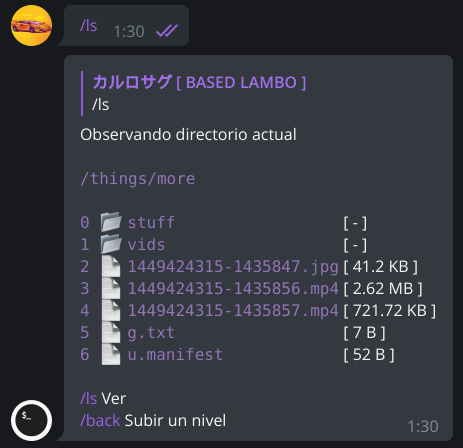
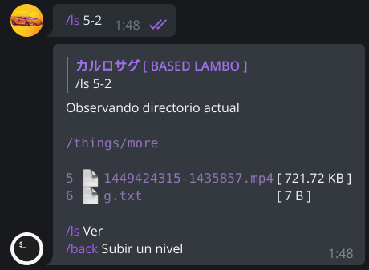

MF Shell guide
This page is the full basic guide of MF Shell. If you do not know how to use the bot, read the whole guide and then you can consult the commands reference


🤔 Introduction
In telegram, most URL uploaders and leechers have this "boomerang" effect, you give them something, wether it's a file i Telegram or a URL, they do their thing and then they upload it to the chat, this is considered "normal". The first thing you need to know is that MF Shell is not a "normal" bot, because this "boomerang effect" does not exist, mainly because there are two ways to get the files: the typical upload and web server sharing, AKA: File-to-Link
MF Shell features
→ You can organize as you like the files you put in the bot: create directories (folders), move, delete, create archives and even encrypt files
→ Great number of supported platforms to download from
→ Mass processing of files/URLs
→ Queue systems and tools for handling them
→ Integrated web server for direct downloads and streaming (File-To-Link)
Basically in any session this is the typical workflow
1 - Download files to the bot
2 - Refactor the files, reorganize them, do anything with them in the bot
3 - Upload to the Telegram chat or share using the web server
📂 File system elements

In MF Shell each user has its own directory (folder) were the user can work, and inside, the user can create more subdirectories to group files and other subdirectories
There's a location (path) considered as the "current location", which is the path where you are standing. You can see it (directory listing) by executing /ls, other commands like /cd and /back also do a directory listing
The files and directories are organised and enumerated from zero as the first element, these enumerations are called indexes. Directories are listed before the files
Elements above zero are the elements in the current location, below zero are the upper levels, for example, let's say you are in this path /things/more/, the parent path (-1) is /things/, the grand-parent is /, and above that there are no more upper levels, because "/" is the root
👈 Selection types

In MF Shell, all the commands that work with the file system, and the /que command, use selectors as arguments
The selectors indicate a selection of elements. When the command has to do with the file system, it generally needs an element present in the current directory or an upper level relative to the current path
There are 3 selection types
→ Simple select
→ Range select
→ Free select
Simple select
Selects an index as it is
In the file system, selecting below zero selects upper levels, and above zero (including the zero), selects an element in the current path
Format: N
Examples:
/ls 3
Observes the element #3
In the case the element #3 is a directory, the command outputs the content of the directory, if it's a file... it just shows the filename
/ls -1
Lists the contents of the parent directory
Remember you cannot access or select in any way a directory above "/", because this is the root
Range select
Range select is used for selecting multiple elements in a specified range
Format: N-Mr/N-M
N and M are numbers and "r" (literally, an "r") is an optional argument
N is the main index
M is the ammount of elements to select
"r" is for selecting, but in reverse
Examples:
/ls 4-3
Observe the indexes 4,5 and 6 in the current location
In this example, 3 elements are selected starting with the element at index 4
/rm 5-2r
Deletes elements in index 4 and 5
In this example, 2 elements are selected in reverse starting at index 5
/mv 4-0 2
Move all elements from index 4 to the directory at index 2
Free select
The free select consists in selecting multiple indexes in a specified order
In some commands, the order in which you select is important, this type of selecion is also useful for selecting non-consecutive indexes
Format: A,B,C,D,E.....N
The indexes are comma-separated
You cannot repeat any elements
There's no limit beyond the number of elements/indexes in the current path
You cannot select less than two elements
Examples:
/upload 4,5,1
Upload indexes 4,5 and 1 in that order
/mv 7,9,14 6
Move the elements at indexes 7, 9 y 14 to the subdirectory at index 6
⚙️ Limits and queues
Transferencias de red y colas
Cada comando de transferencia de red tiene una cola asociada, al cual puede frenarse o se puede cancelar el proceso de transferencia.
Cada usuario tiene un límite de 2 transferencias paralelas y a nivel global hay un límite de 5. El límite global puede ser reajustado por el administrador
Cada cola tiene un identificador, este identificador se usa en comandos que administran colas
Por ejemplo, si agrega una o varias URLs con /wget, y la cola estaba vacía, el comando empezará a trabajar, si sigue ejecutando a dicho comando pero con otras URLs mientras está trabajando, la cola de "w" (que es la cola que identifica a /wget) se irá llenando
Para más información, véase los comandos para gestionar colas aquí
Comandos regulados
Hay comandos, o una parte de ellos donde se realizan tareas intensivas o simplemente reguladas, ejecutarlas simultáneamente sin ningún tipo de control puede ocasionar que el bot se desestabilice, no es primera vez que pasa. Es por eso que en el bot hay bloqueos de comandos y una cola global para procesos pesados
Básicamente nadie puede ejecutar estos comandos de forma simultanea, solo uno de estos comandos puede ejecutarse a uno a la vez y de forma global, lo que se hace es encolar todas estas peticiones para realizar estos procesos, esto se hace con el fin de evitar que ocurra un desbordamiento de memoria o de CPU en el bot
A pesar de todo esto, en la práctica es poco probable verse envuelto en una cola para ejecutar estos comandos. En el caso de verse envuelto en una cola automática y se demora un tiempo considerable, debe reportar inmediatamente el problema al administrador del bot
Límite de sesiones
En cada instancia del bot hay un límite de sesiones, esto se hace por dos razones principales:
1 - El espacio que consume cada sesión dentro de la memoria del bot
2 - El uso de los datos de cada sesión dentro del bot
✍️ Extra knowledge
El comando /start sirve para consultar información básica, más allá de la ubicación actual para no para no "perderse"
Si la cola de procesos pesados o de subprocesos se alarga, y se queda mucho tiempo viendo cómo no avanza, debe reportarlo al administrador a través del grupo, al igual que si tiene una "rotura" en una cola de algún comando. El administrador del bot es el único que puede forzar vaciado de colas, resetear estados de sesiones y otros aspectos del bot sin necesidad de esperar a que el propio bot sea reseteado
Cada cuenta de MF Shell tiene un sitio web asociado, en este sitio web hay una sección de noticias donde se puede ver el "uptime" (tiempo de actividad) que lleva el bot guiándose del primer mensaje, tenga en cuenta que el bot es reiniciado cada 24 horas, borrando todo lo que hay dentro. Asi que si piensa dejar información alojada en el bot para luego descargarla via web, revise el tiempo que lleva en pie el bot y saque usted sus propias conclusiones